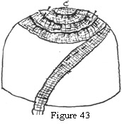

1925—Millinery
by Jane Loewen
CHAPTER VIII—BRAID HATS
The manufacture of braids for millinery forms an extensive industry on the Continent. In the United States most of the industry is confined to the eastern manufacturing group of states where immigrant labor is used.
I. KINDS
There are, of course, more kinds of braids for summer wear than for fall and winter. Braid hats for fall are almost invariably for sport wear.
SUMMER BRAIDS
1. Visca braid. Visca braid is soft and pliable, well-suited to classroom work because it is easily handled.
2. Satin straw. Satin straw is woven of a composition with such a smooth and shining surface that it has the appearance of hard candy.
3. Hemp braid. Hemp makes lovely sport hats when combined with ribbon. It is very satisfactory for facings in fabric hats for early spring and late summer as it is smooth and finished-looking.
4. Milan braid. Milan braid makes some of the smartest of the spring hats. It is an expensive braid both from the point of cost of material and of labor, but is well worth the cost. The sewing gives interesting construction problems for the classroom.
5. Lisère braid. Lisère braid has a harder finish and more of a shine than milan braid. For feather-trimmed, tailored hats and for celophane and lacquered, plume-trimmed hats it is very handsome. Lisère stripping is used for combination sewing with hair braid.
6. Tuscan braid. Tuscan braid is used for elaborate sport and lingerie hats. Special patterns are made for embroidery use. In these patterns the design is practically complete and ready to be applied to hats of straw cloth or fabric.
SPORT BRAIDS
1. Yarn braid. Yarn braid comes in plain and mixed colors suitable for sport wear. Entire hats are often made of and trimmed with yarn braid.
Flowers may be made of assorted colors and used on plain-colored hats. For example : rust, jade, Copenhagen blue, henna, and dull, purple flowers may be used on a sand-colored yarn-braid hat with darker tan-yarn stitching.
2. Chenille braid. Chenille braid comes in more elaborate designs than yarn braid. Often a floral pattern in colors is woven in the braid. This makes it adaptable for trimming purposes. Other patterns are woven of wired chenille. These braids may be sewn without a frame. The body of the braid is sufficient to hold them in shape.
3. Felt braid. Felt braid is much used for machine-sewed sport hats. The edge of the braid is often cut in a pattern of points and scallops.
4. Ramie braid is manufactured from the Malay grass-cloth plant. The strong, rough texture makes it a favorite among manufacturers.
HAIR BRAID
Hair braid is much favored for early spring and summer wear. The spring hats are sewed on pressed frames over a silk or silkoline covering (or interlining). Satin or taffeta is used for crowns or facings.
1. Plain hair. There are three distinct qualities of plain hair braid.
Swiss hair braid is the best quality. It has a lovely lustre, a good fiber, and is closely woven.
German hair braid has a poorer fiber than Swiss hair. The lustre is metallic and the weave, loose and less perfect.
Domestic hair braid is the poorest quality. It is limp, coarse, and lustreless. Most of the cheap factory-made hair hats are made of this.
2. Hair braids with designs come in patterns of exquisite texture and workmanship. These braids are made in Switzerland and France and are used for garden hats and for dressy, all-black hats combined with maline.
White hair with designs in natural tuscan has a dainty effect very pretty in combination with chiffon, georgette, or lace for lingerie or flower-trimmed hats.
Designs in visca on hair braid are used on black, brown, sand, and navy hair-braid hats suitable for both dress and tailored designs.
Designs of satin straw on hair braid come in both street and pastel shades. These braids are suitable for plainer dress and street models.
Designs of embroidery in raffia straw and silk threads on plain hair come in elaborate designs for dressy, tailored, and plainer dress hats.
3. Hair braid folded by machine makes soft effects for facing and is used for street and semidress hats. Plain hair braid or silk are used in combination to prevent the hat from being thick-looking.
4. Hair tubing comes in many colors and is used for braiding and embroidering on plain hair, on silk fabrics, and on straw cloths.
5. Fancy weaves of hair braid (that is, hair braid woven in scallops and irregular patterns) come in a variety of designs suitable for both dress and tailored models.
II. MANNER OF SEWING
The manner of sewing braid varies, but the simplest and most effective methods are the ones given.
CROWNS
Crowns may be sewn in the hand while shaping them into tam or round crowns. In this method the eye must be well trained. The most satisfactory methods for students are:
1. Molding a soft crown over a wooden or buckram block. Wooden molds are an advantage because they may be used for steaming crowns into shape. Buckram crowns will serve as molds for braid sewing but soften with the use of steam.
In sewing abraid crown start sewing at the center top of the crown. Pull up the draw thread at one end of the braid. (If the braid has no drawstring, run one in with a shirring.) Curve the braid in a lengthened circle or oval. Turn back one end for a finish. The center should be a finished oval with braid edge forming the oval-edge.
Lap the selvage of the braid under the edge of the preceding row. Pull up the draw string just enough to make the edge curve to fit the crown or mold. Slide the needle under the braid. Take a small hidden stitch on top and a longer stitch on the wrong side. Do not stitch through the frame at any time. When the top oval has been sewn almost as large as the top of the crown, Dress it with a moderately hot iron on the wrong side. Then pin it in place on the top of the buckram' crown. If a wooden mold is used, fasten it with thumb tacks. Continue sewing down row after row until the base of the crown is reached. Remove pins or tacks and press from the inside. This crown may be used over a soft, pressed crown or over a headsize band as foundation.
Figure 42. Starting the Center of the Braid Crown.
Figure 43. Molding a Braid Crown.
Figure 44. Braid Hat with Fabric Facing. Molded Braid Crown with Side-Crown Foundation.
2. Sewing braid to a pressed crown. Sewing braid to a pressed crown is done in the same way, except that the stitches are taken through the crown after the tip is started in the hand. Very tight stitches may be taken because the crown holds them in place. Use long stitches inside the crown and small hidden stitches on the outside.
PLAIN BRIM
1. With a frame. Bind the frame edge with a row of braid or 1-inch bias strip of silk.
Sew the first row of braid flat over the binding. Allow only 1/8 inch of silk to show. Start the first row a little to one side of the back so that there is room to lap the second row over the end of the first at a gradual slant. Pull up the thread on the inner edge. Continue sewing row after row until the headsize is reached.
Irregular brims will need extra rows at the wider parts.
Always sew the outer rows first and fill in the extra rows at the headsize.
Figure 45. Starting the First Row of Braid as a Binding on the Edge of the Brim.
Figure 46. Slanting the Braid for the Second Row.
2. Without a frame. Sport hats are often made without frames, as it is desirable for them to be very soft. In order to shape them they are sewn over a frame as a mold and then removed from the frame.
For such hats the braid is sewn by slanting the needle (not sticking through the frame). Then the braid can be removed from the frame and the edge wired. Sew the under facing in the same way. Remove from the frame and join the top and under brims at the edge.
Sew the crown over a mold (see section II, above) and attach it to the brim at the headsize.
If the brim is an even shape, the crown may be sewn to the brim and the braid sewn from top crown to brim edge in one piece.
FANCY SEWING OF BRAID BRIMS IN DESIGNS
In sewing dress hats of hair, lisère, milan, and visca braid the braid is often sewn in designs of scallops, loops, and points. Individual patterns give the designs used.
FANCY CROWN SEWING
The narrower braids are often sewn in designs as part of the trimming for semitailored models. The braid designs are given with the patterns.
SEWING MILAN AND LISÈRE
Milan and lisère have a harder finish than any other braids. They have enough body so that the braid when sewn will hold together without a frame but must be soaked in water in order that one may sew them without breaking the straw.
1. Soaking braid. This means merely soaking the braid in warm water before sewing it. Allow the braid to be submerged for about five minutes. Shake off the loose water and wrap the braid in newspaper or a towel. It is then ready for sewing.
2. Molding over wire frame. The soaked lisère or milan may be molded over a wire frame (brim or crown). Bind the edge of the frame with any cotton material. Baste the first row of braid to the binding with long stitches that are easily pulled out when the hat is dry.
Sew the braid over the wire frame just as on a pressed frame. Slant the second row over the end of the first at the back. Sew the second row to the first and the third to the second. Continue to the headsize. Be careful not to stitch over the wires or the threads will break when the braid is removed from the frame. Do not stretch the braid tightly on the wire frame or it will draw the frame out of shape and the braid will have a poor line.
3. Molding over wooden blocks. For a crown, shape and sew the soaked braid over a wooden block just as for a soft crown. Split or rip the braid in half for the center tip. When the center oval has a small diameter of 1 inch, use the entire width of braid (see section II, above). When the braid has been shaped over the crown, fasten it at the headsize with thumb tacks and let it remain on the block until dry.
Brims may be sewn over wooden blocks by fastening the first row of braid with thumb tacks and sewing each row of braid to the one preceding it.
A buckram brim will serve the purpose of a wooden mold and hold in shape for sewing three or four hats.
4. Drying braid. Always be sure that the braid is thoroughly dry before removing it from the mold or frame. It loses its shape if it is still damp. The dampness will spoil the shellac finish.
5. Shellac finish. Shellac for braids is a specially prepared shellac for millinery purposes. It dries quickly and is lightweight. Black and transparent shellac are used more than colors. The transparent kind may be used for all colors.
A coat of shellac restores the shine which is lost in soaking braids.
QUESTIONS
- Name braids suitable for dress hats for early spring; for dressy midsummer wear; for sport wear.
- What is the best grade of hair braid?
- What braids are used in combination with hair braid?
- What is celophane braid?
- Why are lisère and milan braids soaked before sewing?
- How are braid crowns sewed? Give steps and illustrations.
- Can braid hats be made without frames?
- What is ramie braid? What is tuscan braid? What is lisère braid? What is hair braid?
- Give all the steps used in sewing milan or lisère braid over a wire frame.
- What straw braids are used for braiding and embroidery designs?